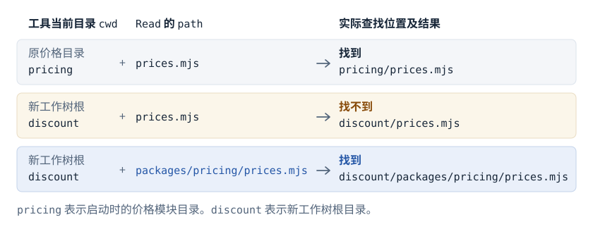
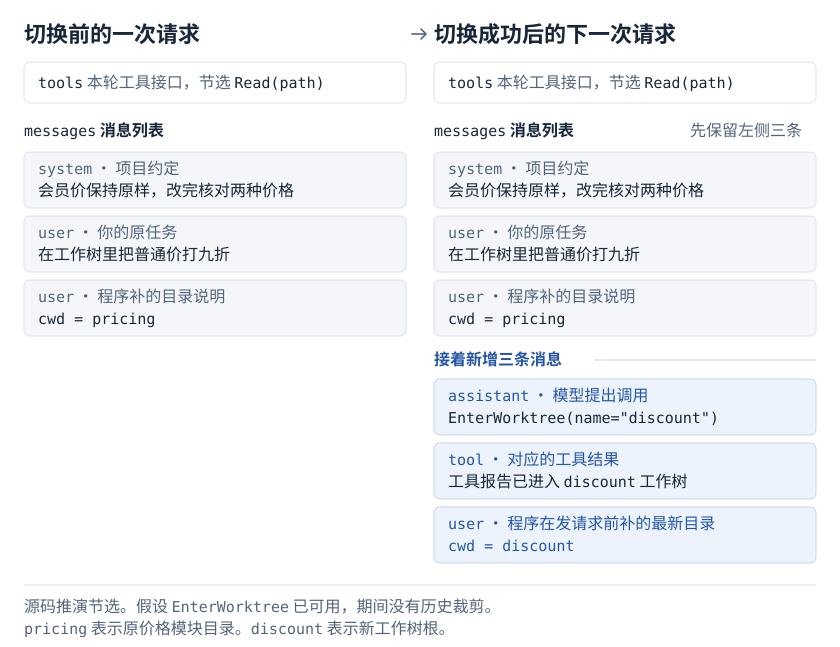

模型收到什么
system 装配、项目指令与动态事实
明明叫 prices.mjs 的文件还在，为什么切换工作树后，同样的 Read 请求却找不到了？把切换前后发给模型的两次请求摆在一起，就能看清程序换了哪个目录，以及模型该怎么填路径。
从原任务到下一次 Read
1.1 同一个 path，为什么换个目录就失效
假设你从 /shop/packages/pricing 启动 RuoCun，prices.mjs 就在这里。你提出“在工作树里把普通价打九折”。这里的工作树是 Git 在另一处目录检出的整个仓库，给这次修改提供一个单独的位置。本例中的价格文件已提交，所以新工作树里也有它，仍在 packages/pricing/ 下。
模型可以用 Read 的 path 指定文件。填入 prices.mjs 这种相对路径时，程序会从工具的当前目录（cwd）找。假设模型进入了名叫 discount 的工作树，随后沿用旧参数，看看图里的第二行会发生什么。

工具按参数算出了路径，读取时才发现那个位置没有文件。它从新工作树的根开始找，价格文件在它的子目录里。接下来看看模型凭什么知道执行目录已经变了。
1.2 切换前后，模型各收到哪些消息
发给模型的请求里，messages 是按顺序排列的消息，tools 是本轮提供给模型的工具接口。消息的 role 标识角色，例如 system 可以承载规则，tool 可以承载工具结果。下面节选切换前后的两次请求，假设 EnterWorktree 已经可用，期间没有裁剪历史。

看着图判断三件事。原任务在哪条消息？哪条消息给出了最新的执行目录？如果接下来让 Read 打开价格文件，path 填什么？
核对三处
两份请求里都有“在工作树里把普通价打九折”，这条才是用户交代的任务。右边最后一条目录说明也是 role=user，由程序在请求前按实际目录追加。结合图 1，现在从 discount 工作树根找文件，下一次应传 {"path":"packages/pricing/prices.mjs"}。
EnterWorktree 的回包也带路径，记录的是那次切换的结果。请求前单独核对目录，后续再切换时就能给模型新值。首条消息里的项目约定继续适用，会员价仍要保留。
接下来沿这两类信息追来源。先看项目约定怎样进入首条 system，再看程序何时会补上新目录。
请求结构与 system 装配
2.1 messages 带历史，tools 给接口
上一章用同一循环带回了新的工具结果。图 2 接着问这份请求还有哪些材料。规则、任务、过程和结果放进 messages。名为 Read 的接口放进 tools，说明模型可以传哪些参数。这两项分别由程序准备。
opts = cast(StreamChatOptions, dict(options))
opts["model"] = session.model
opts["messages"] = copy.deepcopy(session.messages)
opts["tools"] = api_tools() if api_tools is not None else registry.toApiTools()
if opts["tools"]:
opts["parallelToolCalls"] = True
opts["extra"] = {**options.get("extra", {}), "reasoning_effort": policy.reasoning_effort}opts["messages"]先复制当前会话历史。请求前的处理还会确认目录事实，并把确认后的消息交给发送入口。opts["tools"]从本轮可用的工具定义取得。现在从图 2 的第一条消息往回查，看看里面的项目约定怎样填进 system。
2.2 基础提示由模板和启动材料组成
模板提供通用的行为框架，但不知道这次启动在哪个项目、选择了哪个模型，也不知道已经加载了哪些项目材料。运行时先准备这些值，再调用 system_prompt(selected_model)：
runtime.py:612 · 装配本次system的入口
def system_prompt(selected_model: str) -> str:
text = buildSystemPrompt({
"modelId": selected_model, "toolSummaries": tool_summaries,
"platform": sys.platform, "interactive": not bool(args.prompt),
"projectInstructions": project_text, "memories": memory_text,
})
catalog = skillCatalogLines(skills)
if catalog:
text += SKILLS_HEADER + catalog
text += agentCatalog(env, selected_model, definitions=agent_definitions)buildSystemPrompt先填模板；后面的 +=继续加上Skills目录和子代理目录。再往后，运行时还追加当前版本的能力说明；在相应语言条件下，还会追加中文思考提示。它并不是“读一个模板，原样发给模型”。
| 材料 | 为本次任务提供什么 | 进入首条system的方式 |
|---|---|---|
| 基础模板 | 通用工作方式、工具使用指导和回答要求。 | 读取打包资源，再替换占位符。 |
| 当前模型与运行参数 | 模型身份、相关能力提示、平台和交互方式。 | modelId等参数参与填充。 |
| 工具摘要 | 工具名称和简要用途，帮助判断可以借助哪些能力。 | 注册表在启动阶段生成 tool_summaries字符串。 |
| 项目指令 | 本例的双价格检查约定，以及会员价保持原样。 | 读取规则文件，合成 project_text。 |
| 启动记忆 | 启动阶段选中的经验材料。 | 启动快照的 text成为 memory_text。 |
| Skills目录 | 有哪些流程、分别适合何时使用。 | skillCatalogLines(skills)生成目录，追加到模板后。 |
| 子代理目录与能力说明 | 有哪些可派发角色，以及当前版本能力的具体边界。 | agentCatalog和运行时说明继续追加。 |
目录的作用是让模型判断“哪个流程值得加载”。例如Skills目录列出名称、描述、触发信息和必要的调用名，不能据此断言整个Skill正文已经进了system。目录与正文分开，后续遇到匹配任务时才能按需取得详细流程，避免把每个流程一开始全部展开。
启动记忆也只代表这次启动选入的材料；按任务召回的新经验是另一条输入路径。《经验怎样用到当前任务：启动、召回、适用判断与检查》会解释选取与适用判断；《流程怎样按任务加载：Skill目录、正文与动态发现》会接着讲目录如何引向正文。本篇先确认它们在输入里占什么位置。
2.3 把项目约定填入模板占位符
模板装配最核心的动作，是把参数值填到对应占位符里：
system_prompt.py:171 · 模板占位符与实参
replacements: dict[str, str] = {
"{model_id}": model_id,
"{model_vision_note}": _vision_note(model_id, False),
"{model_vision_note_en}": _vision_note(model_id, True),
"{project_instruction_files}": opts.get("projectInstructions") or none,
"{tools}": opts["toolSummaries"],
"{platform}": opts.get("platform") or unknown,
"{memory}": opts.get("memories") or none_yet,例如 {project_instruction_files}会换成已读取的两份约定；{memory}会换成启动记忆文本。函数最后逐个 text.replace(key, value)，返回字符串。它没有在这里读取价格文件、运行检查，也没有把“会员价不变”转成一条自动验收程序。
模板构造器用 lang 选择基础模板。上面的运行时调用沿用默认的中文基础模板，再根据终端语言决定是否追加中文推理提示。平台名来自这里传入的 sys.platform，而当前工作目录由后文的目录快照提供。
这一步让模型看见了项目约定。能否把约定落实到价格上，还要看模型选了什么动作、程序是否允许执行，以及试算得出了什么。
项目规则的查找与拼接
3.1 向上找 Git 根，再从根向下读取
仓库根的规则说改完要核对两种价格，pricing 的规则专门说明会员价保持原样。reports 是同级模块。先沿目录树找一找，从启动目录 pricing 往上，到哪一级能看见 .git？
/shop/
├── .git/
├── RUOCUN.md
└── packages/
├── pricing/
│ ├── RUOCUN.md
│ └── prices.mjs
└── reports/
└── RUOCUN.md/shop/RUOCUN.md
价格行为变更后，分别检查普通价与会员价。
/shop/packages/pricing/RUOCUN.md
折扣只用于普通价，会员价保持原样。
本例从pricing启动，为什么能取得 /shop/RUOCUN.md，却不读旁边reports里的约定？关键在 _projectChain：它从传入的启动目录向上走，找到存在 .git的目录以后，反转已经经过的路径。
project_doc.py:12 · 形成项目指令的目录链
def _projectChain(start: Path) -> list[Path]:
chain: list[Path] = []
directory = start
while True:
chain.append(directory)
if (directory / ".git").exists():
return list(reversed(chain))
if directory.parent == directory:
return [start]
directory = directory.parent代入本例，向上找到 /shop后，得到下面这条读取链：
/shop
→ /shop/packages
→ /shop/packages/pricing它只访问这条链上的候选文件，不递归扫描所有后代目录，所以reports没有被包含。若一路走到文件系统根仍没找到 .git，代码返回 [start]，即只保留传入目录；也不是把整个盘的祖先规则都拼起来。.git检查用的是存在性，既能作为目录，也能作为工作树中的标记文件。
这个例子里，/shop 是用来确定规则链的仓库根，启动时记录的工作区根 workspaceRoot 是 /shop/packages/pricing。真正用来拼相对路径的是当前目录 ctx.cwd，它起初也在 pricing，进入工作树后就有了新值。
3.2 按整段规则文本去重
先看普通 CLI 启动时的调用。启用项目指令时，入口只传启动目录和用户配置根。加载器的 compatibility 参数使用默认值，兼容来源列表为空。
runtime.py:589 · 普通 CLI 读取项目指令
# 普通 CLI 只传当前目录和用户配置根，兼容来源沿用空列表。
project_text = "" if args.no_project_instructions else loadProjectInstructions(cwd, userRoot=user_root)默认配置下，先读用户级 ~/.ruocun/RUOCUN.md，再读项目目录链。每到一层，按 RUOCUN.md、RUOCUN.local.md 的顺序尝试读取。下方两段保留同一个循环的起点和原生文件读取点。
project_doc.py:54 · 先读用户级，再遍历项目链
read("用户级(~/.ruocun/RUOCUN.md)", user_root / "RUOCUN.md")
# 按从 Git 根到启动目录的顺序遍历，当前层的相对位置用于标出规则来源。
chain = _projectChain(root)
for directory in chain:
rel = os.path.relpath(directory, root)project_doc.py:67 · 读取当前层的原生文件
read(f"RUOCUN.md @ {rel}", directory / "RUOCUN.md")
read(f"RUOCUN.local.md @ {rel}", directory / "RUOCUN.local.md")
return "\n\n".join(parts)同一个通用加载器也支持调用方显式传入兼容指令源。此时兼容用户源排在原生用户文件前，声明属于当前工作区的兼容项目源排在对应层的原生文件前。普通 CLI 不传这些来源，所以相邻目录即使放了同名文件，也不会经这条入口自动进入本轮项目指令。
对每个候选文件，内部的 read先读取并清理首尾空白与BOM，再按内容判断是否已经出现：
project_doc.py:34 · 缺失处理与完整内容去重
def read(label: str, file: Path, source_id: str | None = None) -> None:
try:
content = file.read_bytes().decode("utf-8", errors="replace").strip().strip("\ufeff").strip()
except OSError:
if sourceStates is not None and source_id is not None:
sourceStates[source_id] = "缺失或不可读；该源未加载"
return
# 按清理后的完整文本去重，先读到的来源保留。
if content and content not in seen:
seen.add(content)
parts.append(f"### {label}\n{content}")
state = "生效：内容已注入"except OSError让缺失或不可读的来源被跳过；空内容也不会加入。seen记录的是清理后的完整内容，同样一份文字在多个来源出现时，只保留先进入的一份。它没有把规则拆成一句一句比较，也没有按标题合并。
假设本例只有两份非空原生规则，最终项目文字包含：
### RUOCUN.md @ ../..
价格行为变更后，分别检查普通价与会员价。
### RUOCUN.md @ .
折扣只用于普通价，会员价保持原样。如果根规则写“所有价格都打折”，子规则写“会员价不变”，两句会按顺序一同出现在提示里。seen 比较的是整段文字是否相同，两句都会通过。要让模型看见明确的适用范围，规则作者可以写明“默认打折，会员价除外”。
首条 system 的更新
4.1 为什么刷新 system 后仍是旧规则？
假设启动时读到了“改完核对两种价格”。会话中途，有人把磁盘里的规则改成“只核对普通价”，然后切换模型，触发重建首条 system。新请求究竟带哪一句？沿源码先找读取文件发生在什么时候。
回看普通 CLI 读取项目指令的调用。它在启动时就给 project_text 赋值。
recall_counts: RecallCounts = {"injected": 0, "stale": 0, "changed": 0, "types": {}}
startup_snapshot = (StartupMemorySnapshot() if args.no_memory else
await buildStartupMemorySnapshot(memory_store, onRecall=recall_counts.update))
memory_text = startup_snapshot.text“改完核对两种价格”已经成了 project_text 字符串。前面见过的 system_prompt(selected_model) 在装配时取这个外层变量。内层函数能访问外层变量的关系叫闭包。切换模型会给构造函数一个新模型，规则变量仍是原值，所以这次请求仍会带上第一句。
「重建首条 system 时，项目规则沿用启动时读出的 project_text」。每次装配可以复用这份规则，代价是磁盘改动要经过实际重读与重新赋值才能进入提示。启动记忆的 memory_text 也用已选材料。任务记忆走按任务召回的路径，新增内容会出现在后面的消息位置。
4.2 替换首条 system，保留后续消息
真正刷新时，refresh_system_prompt先取得当前模型，重新装配提示，再用新system加上原来下标1之后的历史：
runtime.py:697 · 重建并替换首条system
async def refresh_system_prompt(*, sanitize: bool = False) -> None:
history = sanitizeHistoryForResume(session.messages) if sanitize else session.messages
prompt = system_prompt(session.model)
messages = [{"role": "system", "content": prompt}, *history[1:]]
await conversation.replace_context(session, messages, reset_prompt=False)history[1:]保留的是首条 system 之后的消息。conversation.replace_context先提交候选上下文，确认保存后才替换会话的消息列表。后续请求从首条消息读取新的系统提示，其他任务历史继续可用。
启动或恢复会走这条重建路径。模型切换也会装配对应模型的新system：有的路径经过准备与上下文变换后提交，有的调用这里的刷新函数；语言变化在运行入口检查到时也会触发刷新。这些是状态变化时的动作，并非每次模型请求都重读所有来源。
| 当前发生的事 | 可以发生的更新 | 不能据此推断什么 |
|---|---|---|
| 启动新进程 | 重新准备本次项目文字、启动记忆等来源，再装配system。 | 不代表所有磁盘内容都无条件注入；开关与选取逻辑仍有效。 |
| 当前会话重建首条system | 按当前模型、当前可见的闭包数据重新组合文字。 | 不代表重新执行 loadProjectInstructions或启动记忆选择。 |
| 界面语言变化后重建 | 相应附加语言提示可变化；工具描述有自己的语言传参。 | 当前调用没有传 lang，不能说基础模板整体自动切英文。 |
| 进入或退出worktree | ctx.cwd变化，请求前补新的目录事实。 | 不代表重建首条system或重读工作树中的项目规则。 |
排查“规则改了为什么还没生效”时，可以沿表追两步。先查加载规则的入口有没有重走，再查新消息有没有提交。读出新文件、重新装配提示和将提示发布到会话，各自需要有对应的证据。
4.3 Skills 清单确认后原地扩充
也不能反过来说“启动读过的东西以后全都不变”。skills是一个列表，动态发现与安装的确认流程可以扩充它。运行时先把新增目录作为后续system消息提交，再确认候选并扩展已安装项：
if catalog_texts:
catalog = [{"role": "system", "content": text} for text in catalog_texts]
await conversation.replace_context(session, [*session.messages, *catalog], reset_prompt=False)
# 保存期间即使收到暂停，也须发布已确认工作目录对应的同一候选。
skill_discovery.confirm(candidate, skills)
skills.extend(installed)confirm(candidate, skills)内部会把发现或激活的条目加入同一列表，后面的 skills.extend(installed)再加入安装项。以后如果重建首条system，skillCatalogLines(skills)会读到这个已更新的列表。它与“每轮扫描磁盘重新加载全部Skill”仍是不同机制。
判断装配能读到什么，要追具体的更新动作。project_text 的值来自启动时的文件读取，skills 列表能被安装和发现流程原地扩充。下一节的目录事实会在准备请求时重新从实际执行上下文取得。
会话目录与快照
5.1 Shell 的 cd 只改变本次子进程的目录
先回到进入工作树之前，排除一个常见误会。此时会话还在pricing，若一条普通Shell命令执行 cd ../reports，即使命令成功，变的也是这次子进程的工作目录；它没有把 ctx.cwd写回reports。下一次工具调用仍以会话当前执行目录为依据。
exec_shell.py:122 · 每次命令取执行上下文中的目录
cwd = ctx.cwd or ctx.workspaceRoot从初始pricing目录运行这一条命令后，再调用 Read读取 prices.mjs，目标仍是pricing下的文件；不会因此加载reports的规则，也不需要追加“会话cwd已到reports”的快照。把命令输出里的路径当成会话事实，会制造一份与程序实际执行状态不一致的输入。
回到图 2。执行 EnterWorktree 成功后，程序明确把新根目录写入执行上下文。
enter_worktree.py:49 · 显式更新当前执行目录
# 切换文件和命令的当前目录，继续用原工作区的项目配置。
setattr(ctx, "activeWorktree", ActiveWorktree(worktree, ctx.cwd))
ctx.cwd = worktree.root
return (f"已进入 worktree：{worktree.root}（分支 {worktree.branch}）。此处用于文件操作和运行命令。"
"记忆、MCP、LSP 和技能继续采用原项目的配置。结束时调用 ExitWorktree。")已进入 worktree：/shop/packages/pricing/.ruocun/worktrees/discount（分支 ruocun-wt-discount）。此处用于文件操作和运行命令。记忆、MCP、LSP 和技能继续采用原项目的配置。结束时调用 ExitWorktree。activeWorktree记下原来的 ctx.cwd，ctx.cwd = worktree.root才是这次切换的关键赋值。退出工作树时恢复此前目录；工作区根没有随之赋新值。模型需要被告知变化，路径解析程序则直接读取这个新值。
5.2 工具与快照从同一执行上下文取目录
切到 discount 后，模型如果还拿旧的 pricing 当起点，就会沿用 path="prices.mjs"。程序却会在新工作树的根解析这个短路径，图 1 的第二行就会发生。图 2 右边最后一条消息给了模型新的目录事实。把它的 content 展开，就能看到 workspace_root 和 cwd。程序把当时的目录状态记成一条消息，这里称它为目录快照。
<ruocun-runtime-context>
Runtime directory facts; supersede older directory facts in history and summaries. This is not a new task.
{"workspace_root":"/shop/packages/pricing","cwd":"/shop/packages/pricing/.ruocun/worktrees/discount"}
</ruocun-runtime-context>英文说明提醒模型用刚生成的目录事实理解路径。生成这份消息时，buildRuntimeContext 直接读取工具执行上下文 ToolContext。
runtime_context.py:18 · 目录事实的来源与消息形状
def _content(workspace: str, cwd: str) -> str:
return _PREFIX + json.dumps({"workspace_root": workspace, "cwd": cwd},
ensure_ascii=False, separators=(",", ":")) + _SUFFIX
def buildRuntimeContext(ctx: ToolContext) -> ChatMessage:
"""只从当前执行的 ToolContext 取得真实目录。"""
return {"role": "user", "content": _content(ctx.workspaceRoot, ctx.cwd or ctx.workspaceRoot)}「Read 的路径基准和模型的目录快照来自同一份 ToolContext」。这两处都用 ctx.cwd or ctx.workspaceRoot 取得有效目录，有 cwd 就用它，否则取工作区根。路径解析直接拿这个目录去解释模型提交的相对路径。生成快照的一侧把这个值写进请求，模型看到后可以把参数改为 packages/pricing/prices.mjs。
快照与原任务都可以是 role=user。这里的快照由程序生成，请求里的固定前后缀、两个字符串字段及规范化内容供 isRuntimeContext 识别。模型还要自己选好 path，实际读取的位置仍由工具按当前上下文解析。仅在聊天里写下一段路径文字，不会给执行上下文赋值。
5.3 为什么只和最近一份目录快照比较？
假设模型在 discount 连续读取两个文件，目录始终相同。若每次发请求都重新附加同一份快照，历史就会多出重复消息，占用请求空间。只在变化时追加可以省下这些重复，但比较对象要选对。
再看退出工作树这一步。历史里先有 pricing，后有 discount，现在实际目录又回到 pricing。如果只要历史里出现过 pricing 就跳过追加，最近的目录说明还会指向 discount。模型若沿用它，就可能仍提交 packages/pricing/prices.mjs，工具会在原价格目录下再拼出一个 packages/pricing/，找错位置。为此，程序从历史尾部向前找最近一条标准目录快照。
runtime_context.py:43 · 与最近一条标准快照比较
def needsRuntimeContext(messages: Sequence[ChatMessage], snapshot: ChatMessage) -> bool:
for message in reversed(messages):
if isRuntimeContext(message):
return message != snapshot
return True「目录快照与最近一份比较，回到旧目录也是一次变化」。第一次遇到的标准快照就是 discount。当前快照写的是 pricing，两者不同，函数返回 True。找不到快照也会返回 True，只有最近一份与当前相同时才返回 False。
context_runtime.py:208 · 请求前确认新增的目录事实
async def _ensureRuntimeContext(self) -> None:
if self.ctx.signal.is_set():
raise InterruptedError("上下文检查已取消。")
snapshot = buildRuntimeContext(self.ctx)
if needsRuntimeContext(self.session.messages, snapshot):
await self.journal.replace_context(self.session, [*self.session.messages, snapshot], reset_prompt=False)_ensureRuntimeContext 根据判断结果决定是否提交“旧消息加一条快照”。代入退出的例子，追加的新快照告诉模型当前已经回到 pricing。用表里的四个时点核对一下。
| 时点 | 当前ctx.cwd | 是否追加目录事实 |
|---|---|---|
| 首次模型请求前 | 启动pricing目录。 | 没有已有标准快照，追加。 |
| Read后继续，目录未变 | 仍是pricing。 | 与最近快照相同，不追加。 |
| EnterWorktree成功后的请求前 | discount工作树根。 | 与pricing快照不同，追加。 |
| 退出工作树后的请求前 | 恢复pricing。 | 与最近的worktree快照不同，再追加。 |
追加快照后，后续消息仍可能接在它后面。目录未变时，用户新发的要求也可能在末尾。读历史时要依照标记和消息顺序找最近有效的目录说明。
请求前检查还可能与上下文压缩配合。尾部新增目录消息以后，真正尚未得到助手处理的用户输入仍需被保护，不能因为它不再是最后一条user消息就丢掉。当前实现专门跳过目录快照，找到最近的真实用户输入。《上下文放不下怎么办：预算、完整工具组与摘要提交》会继续解释保护与裁剪；此处先把“事实更新没有取代用户目标”讲清楚。
补充消息的位置与更新
6.1 SessionStart 上下文单独放在下标 1
前面讨论的是首条system。Hook是在指定事件前后运行的扩展处理，可以提供附加信息或参与决策。启动或恢复时，SessionStart Hook可以提供 additional_context。运行时清理历史中带若存 SessionStart 标记的系统消息，再把本次非空的附加内容插入下标 1。
runtime.py:2111 · SessionStart附加上下文的位置
start_hook = await session_hook("SessionStart", lifecycle_id,
RunCtx(str(cwd), source="resume" if args.resume else "startup"), cancelled)
messages = [message for message in session.messages if not (
message.get("role") == "system" and isinstance(message.get("content"), str)
and message["content"].startswith(_SESSION_START_MARKER + "\n"))]
if start_hook.additional_context.strip():
start_context = conversation.redact(start_hook.additional_context)
messages.insert(1, {"role": "system", "content": f"{_SESSION_START_MARKER}\n{start_context}"})
if messages != session.messages:
await conversation.replace_context(session, messages, reset_prompt=False)下标0是重建的基础system，下标1是单独的SessionStart上下文，后面才接其余历史。没有非空内容就不会插入这条。恢复时按若存 SessionStart 标记定位上一次注入的内容，避免多次启动的附加内容不断叠加。
Hook提供的内容会先经过会话脱敏，再进入历史。这里关注的是信息位置与替换时机；Hook能拦截哪些事件、如何影响参数和决策，由《执行前后怎样插入规则：Hooks改参、决策与收据》系统展开。
6.2 任务上下文与建议按事件追加
用户在当前工具批还没收尾时补一句“会员价保持 200”，会话先给这次输入分配 ID 和递增序号，再提交排队记录。接纳回执确认它已经排队，这次提交仍沿用原来的 session.messages。
conversation.py:227 · 确认接纳时写入排队记录
seq = max((entry.seq for entry in self._accepted_inputs), default=0) + 1
item = AcceptedInput(str(uuid.uuid4()), seq, packQueuedInput(safe_content, model_content), (), "queued")
# 这次提交沿用当前消息历史，只把排队记录纳入检查点。
await self._commit(session, session.messages, (*self._accepted_inputs, item))
return item到能安全处理输入的调度边界，运行时才执行 UserPromptSubmit。Hook 放行后，再按配置补任务记忆。调用方把两种非空内容汇总成一个 hook_context。会话把这句补充写成 user，随后放入附加的 system，并在一次提交中更新消费状态。Hook 阻止时，这条输入标记为 discarded，模型历史沿用原值。
conversation.py:246 · 安全边界消费并提交消息
messages = session.messages
# 只有未被拒绝的输入才生成模型要看的消息。
if not rejected:
self._require_paired(session)
projected = modelInput(item.payload) if model_content is None else model_content
if self._safe(projected) != projected:
raise ValueError("模型输入无法完整保存，保留排队原文，停止本次消费。")
messages = [*messages, {"role": "user", "content": copy.deepcopy(projected)}]
if hook_context:
messages.append({"role": "system", "content": self.redact(hook_context)})
replacement = replace(item, state="discarded" if rejected else "consumed",
payload=item.payload if rejected else packQueuedInput(originalInput(item.payload)))
updated = tuple(replacement if entry.input_id == input_id else entry for entry in self._accepted_inputs)
# 把消息与输入状态一起提交，确认后再换内存里的历史。
await self._commit(session, messages, updated)
session.messages = messages工具批结果确认后，ToolBatchFeedback.after_tool_batch() 还会判断要不要补一条进度建议，并按本批状态判断是否启动反思。生成建议后，回调 append_feedback 将已有文字追加成系统消息并提交。
tool_batch_feedback.py:48 · 先判断进度，再交给写入回调
advice = self._progress.step(
batch_names, runningBackground=running_background,
interactive=self._interactive, enabled=self._progress_advice,
)
# 先确认有建议且本轮未取消，再把建议交给消息写入回调。
if advice and not self._cancelled():
# 反思会读取当前会话，先提交本批的进度提醒。
await self._append_feedback(advice)
if self._progress.notice and self._notice:
self._notice(self._progress.notice)tool_batch_feedback.py:70 · 根据反思结果追加建议
reflection_note = ""
if self._reflect is not None and (decision["challenger"] or decision["refocuser"]):
label = "审视者" if decision["challenger"] else "纠偏者"
if self._notice:
self._notice(f"[反思：{label}…]")
verdict = await self._reflect("challenger" if decision["challenger"] else "refocuser")
if verdict and not self._cancelled():
reflection_note = f"[{label}]\n{verdict}"
elif self._self_challenge and decision["challenger"]:
reflection_note = SELF_CHALLENGE_NUDGE
# 只有本次得到了非空反思建议，才复用同一个写入回调。
if reflection_note:
await self._append_feedback(reflection_note) async def append_feedback(text: str) -> None:
# 这里负责追加和提交建议，触发判断留在工具批反馈模块。
messages = [*session.messages, {"role": "system", "content": text}]
if journal is None:
session.messages = messages
else:
await journal.replace_context(session, messages, reset_prompt=False)前面见到的动态 Skill 目录也走后续追加。进度建议、反思建议和 Skill 目录都使用 system 角色，各自仍有自己的触发时机。
| 信息 | 消息位置 | 更新责任 |
|---|---|---|
| 基础system | 首条消息，下标0。 | 状态变化时重新装配并替换。 |
| SessionStart附加上下文 | 非空时插在下标1，角色system。 | 启动或恢复时清理带若存 SessionStart 标记的历史消息，再提交本次内容。 |
| 输入Hook与任务记忆 | 相应用户输入后，角色system。 | 消费该输入时按条件汇总并提交。 |
| 进度、反思、新增Skill目录 | 相应事件后追加，角色system。 | 各自的触发与确认流程。 |
| 当前目录事实 | 需要更新时追加，角色user。 | 请求前从实际执行上下文取值并比较。 |
因此，排查“模型为什么还按旧信息做事”时，应先问内容来自哪条路径、有没有真正进入本轮消息，而不是只看首条system是否更新。多条system消息可以同时存在；角色告诉你消息类型，不能独自解释它的时效和来源。
6.3 为什么把目录事实放在首条 system 之外？
假设让首条 system 也负责公布当前目录。图 2 中从 pricing 切到 discount 时，就要改写首条消息；项目约定本身没有变，首条消息也必须跟着目录更新。若更进一步，直接从新工作树根重新收集项目约定，目录链只会走到该工作树自己的 .git 标记。本例原来从 pricing 子目录读出的会员价说明就不会自动被带上。
目录变化只需追加快照。首条 system 保持原来的刷新时机，启动时读到的规则可以照常使用。代价是历史中可能同时存在新旧目录，所以快照要能被识别，还要说明新事实的时间顺序。
不过“较稳定”只是请求组织方式，不能直接换算成缓存命中或费用下降。模型服务看到的还有实际序列化后的消息、工具接口、模型选择和其他请求参数。《前缀缓存怎样配合请求：稳定布局、摘要与命中观察》会解释缓存所需的原理、命中条件与观察方法；本篇只确认稳定材料与变化事实怎样组织，优先保证当前事实正确。
模型输入与工具执行
7.1 tools 按当前模式和可见性生成
system中的工具摘要来自启动时的注册表转换，生成后保存在 tool_summaries字符串中。当前请求的 tools则由独立回调取得：
def api_tools() -> list[dict[str, Any]]:
return apiToolsForMode(registry, "plan" if permissions.getMode() == "plan" else "normal", ctx.lang)tools_for_mode.py:10 · 过滤当前可见工具
def apiToolsForMode(registry: ToolRegistry, mode: Mode, lang: str | None = None) -> list[ApiTool]:
if mode == "normal":
return registry.toApiTools(lambda tool: registry.isMcpVisible(tool.name), lang, hideUnactivatedDeferred=True)
return registry.toApiTools(lambda tool: not tool.name.startswith("mcp__") and tool.capability not in ("write", "exec"), lang, hideUnactivatedDeferred=True)沿代码看一项就够。会话进入只读规划时，写工具会从本轮 tools 里移除，启动时生成的简要用途仍留在 system 文本里。工具的实际公布范围在工具契约篇继续拆解。这里先区分三份信息各自的作用。摘要帮助选择，接口说明怎样填写，实际调用则由程序重新检查。
7.2 路径依据执行状态，需求依据行为结果核对
再回到价格文件。进入worktree后，模型应根据新目录使用 packages/pricing/prices.mjs。它即使仍在回答里说“我在原pricing目录”，也不会因此把实际工具目录改回去。路径处理直接依据执行上下文：
async def approvedPath(ctx: ToolContext, p: str, *, write: bool = False) -> str:
absolute, external = await asyncio.to_thread(classifyPath, ctx.cwd or ctx.workspaceRoot, p)
if ctx.signal.is_set():
raise InterruptedError("工具调用已取消")classifyPath得到 ctx.cwd or ctx.workspaceRoot与模型传入的路径，再进入后续检查。目录事实是把程序当前状态告诉模型，帮助它选对参数；实际执行本身不依赖模型是否在自然语言里复述正确。跨路径批准与模式裁决，由《执行之前谁说了算：路径、模式与批准裁决》解释。
当前篇章的判断到这里落地。目录消息让模型有依据选对 path，真实执行目录让工具打开对应文件。至于同一文件里修改哪处，以及改完如何验证两种价格，交给文件编辑的实际演示。
这几层配合，才形成完整约束：把必要规则和事实交给模型，明确可用接口，在执行时检查条件，最后核对结果。输入设计改善模型做判断的依据；它既不能替模型承诺每步选择正确，也不能替程序省掉验证。
学习效果检测
8.1 消息来源、刷新时机与执行目录
1．从pricing启动，根目录、pricing、reports各有一份不同的RUOCUN.md。哪些项目规则进入？若没有Git标记，行为又怎样？
展开答案
有本例的 Git 标记时，链是 /shop → /shop/packages → /shop/packages/pricing，因此根目录和 pricing 的规则进入，reports 不在读取链上。普通 CLI 还会尝试读取用户级 RUOCUN.md，兼容来源使用默认空列表。若向上始终找不到 .git，项目链只保留传入的 pricing 目录。
2．根规则和local文件各有不同文字。后读local是否会删除根规则？两份内容完全相同呢？
展开答案
不同内容会按顺序一起拼接，程序没有实现按语义覆盖或删除父规则。清理首尾空白与BOM后，完整内容相同才被 seen去重，保留先进入的一份。读取顺序、内容去重、语义冲突是三件事。
3．启动后修改了磁盘上的项目规则，接着因模型变化重建system。新规则会自动进入吗？如果动态Skills清单已确认扩充呢？
展开答案
这次请求中的项目规则仍取自启动时读出的 project_text。规则文件的改动要经过读取、赋值和装配才能进入请求。已经确认扩充的项目 Skills 会进入后续装配，因为 skillCatalogLines(skills) 读取的是被更新过的列表。
4． 你从 /repo/docs 启动，目录快照也是这里。一次 Shell 执行 cd exports 后打印 /repo/docs/exports。用户接着说“读刚才那个目录里的 report.csv”。下一次 Read 该填什么？如果两个目录各有同名文件，怎样判断究竟读了哪份？
展开答案
Shell 打印的是该子进程的目录。会话仍从 /repo/docs 解析相对路径，传 {"path":"exports/report.csv"} 才指向用户指定的文件，假设路径在允许范围内。核对会话的目录事实和那次 Read 的实际参数。直接传文件名即使读成功，也可能读的是 docs 下的同名文件。
5．进入discount工作树后，workspaceRoot是什么？价格文件该用哪个相对路径？此时工作树里的规则改了，会被自动重读吗？
展开答案
workspaceRoot 仍是 /shop/packages/pricing，ctx.cwd 变成 /shop/packages/pricing/.ruocun/worktrees/discount。工具从新根解析参数，快照也会用这份执行状态告诉模型新的基准，所以模型应传 packages/pricing/prices.mjs。首条 system 里的规则继续取自启动时读到的 project_text。
6．目录已经连续两次请求没变，用户又发来“再检查数量为0的情况”。最后一条消息必须是目录快照吗？退出工作树回到旧目录时呢？
展开答案
目录不变时省略重复快照，末尾可以是真实用户的新要求。退出时，最近的快照仍是 discount，实际目录已回到 pricing，这时要追加一条。若用更早出现过的 pricing 跳过追加，最新的目录消息就会留在 discount。
7．看到多条system：首条基础提示、下标1的SessionStart上下文、工具结果后的进度建议。它们会随同一次刷新一起重新读取吗？工具摘要里有某工具，就一定能调用吗？
展开答案
不会。首条system按自己的装配路径替换，SessionStart 在启动或恢复时清理带若存标记的历史消息，再插入本次非空的附加内容，进度建议在相应执行事件后追加。工具摘要还是文字信息；是否已向模型公布接口，要看当前 tools，能否执行还要经过执行层检查。消息角色相同、名称曾出现，都不能替代来源与生命周期核对。
模拟面试官提问
9.1 Agent 开发实习
独立核心题
RuoCun怎样把通用Agent变成理解当前项目约定的Agent？
展开参考回答
口述回答：它先取得当前项目的规则与选中的经验，再把这些材料和模板、工具摘要、Skills及子代理目录共同装配进基础system。项目规则按用户级来源和Git根到启动目录的链读取，所以能同时带上全仓库约定和当前模块要求。后续工具结果与动态目录事实继续进入消息，模型据此选择下一步。
机制依据：loadProjectInstructions形成 project_text；system_prompt把它与 memory_text等传给模板构造器，再追加目录和能力说明；请求取当前 session.messages。
适用边界：规则可见不等于保证服从。冲突规则只是按顺序拼接，行动仍受接口和执行检查约束，需求最后还要验证。
怎样减少Agent对文件位置和项目行为的乱猜？本项目有哪些具体做法？
展开参考回答
口述回答：先给它真实的项目约定，再用程序当前执行上下文生成目录事实，让它知道在哪个位置操作。需要代码内容时通过Read取得原文，而不是靠记忆猜文件。接口明确参数要求，程序在执行时核对路径与条件，修改后再看行为结果。每层都提供具体依据，不能只靠一句“不要幻觉”。
机制依据：目录快照来自 ToolContext，路径解析同样使用 ctx.cwd or ctx.workspaceRoot，使提示信息与执行基准有共同来源。正文的180／200用于检查价格需求。
适用边界：这些机制降低信息缺失和状态不一致带来的风险，不保证模型总能找到正确文件或选择正确动作。完整代码定位见《从问题找到代码：Glob、Grep、Read怎样配合》，本篇已讲清输入与执行状态的关系。
重点追问链
主问：进入工作树以后，怎样让模型继续原任务，而不是按旧目录改文件？
展开主问回答
口述回答：EnterWorktree先更新实际的ctx.cwd。下次请求前，程序根据这个上下文生成目录快照，与最近一份比较，变化了就追加到历史，再把新历史交给模型。消息明确是目录事实，不是新任务，所以原价格目标继续保留，路径判断依据则更新了。
机制与边界：项目规则不因切换自动重读；工作区根仍保留。新工作树检出整个仓库，模型仍需要据此选对相对路径。
追问1：先回到初始pricing目录。若一条Shell命令执行 cd ../reports成功，也会更新会话目录吗？
展开追问1回答
口述回答：普通Shell里的cd只改变那次子进程目录，没有回写ctx.cwd，所以不能把reports当成会话新目录。事实消息跟实际执行上下文走，不跟一段命令文本或输出里的路径走。
依据：Shell计划每次从 ctx.cwd or ctx.workspaceRoot取启动目录；本篇的EnterWorktree则有明确的 ctx.cwd = worktree.root赋值，两者机制不同。
追问2：模型还是选错了文件，目录快照是不是就没有价值？
9.2 Agent harness 岗位
独立核心题
怎样设计上下文更新，既保留稳定材料，又让模型知道当前事实？
展开参考回答
口述回答：先按来源和更新责任分开。项目规则与启动记忆形成这次进程选中的字符串，基础system在特定状态变化时重建；当前目录由执行上下文产生，变化才追加；SessionStart、任务记忆和建议分别在自己的事件位置提交。这样能解释每份输入是谁更新的，也避免为一个目录变化重写全部基础提示。
机制依据：首条system用 refresh_system_prompt替换；SessionStart插下标1；后续事件可追加system；_ensureRuntimeContext比较最近标准快照后追加user目录事实。
适用边界：Skills列表有单独的确认更新路径，不能笼统称全部来源固定。稳定布局也不自动等于缓存命中；关联前缀缓存篇再检查真实请求与服务返回的命中信息。
为什么不能把工具摘要当作当前可执行能力的唯一依据？
展开参考回答
口述回答：摘要是启动时生成的文字，作用是帮助模型认识能力。本次公布的接口来自当前工具表，要考虑模式、MCP可见性与延迟激活；接口出现以后，执行器仍要核对调用和权限条件。文字、接口、执行是不同环节，任何一层都不能单独证明操作已经允许或成功。
机制依据：api_tools()调用 apiToolsForMode，plan会排除mcp__与write、exec工具，并隐藏未激活延迟项；请求再把这份结果装入 tools。
适用边界：接口与执行屏障的完整实现由工具契约篇承接；本篇不把一段能力说明等同于执行授权。
重点追问链
主问：用户说“规则文件改了，为什么刷新system还是旧规则”，你会怎么排查？
展开主问回答
口述回答：先区分读取与装配。追到runtime里的project_text，看它在启动时由loadProjectInstructions生成；刷新只调用system_prompt再拼接现有变量，没有重新读磁盘。因此要确认期待的是重建消息还是重读规则，当前实现并没有通用热加载语义。
机制与边界：同时核对实际加载链、缺失或去重情况，再看本轮请求的首条system，不能只检查磁盘文件。重新启动会走新的来源准备过程，但是否选入仍受范围和开关影响。
追问1：闭包能看到最新变量，为什么这里却没有看到文件最新内容？
展开追问1回答
口述回答：闭包能访问外层变量，不会自动重做生成该值的操作。project_text仍是此前读出的字符串，没有重新读取赋值就不会变成新文件内容。反过来，skills列表如果被确认流程原地扩充，后续装配就能遍历新增项；判断依据是数据的实际更新路径。
依据：对照启动赋值、装配读取以及 confirm和 extend，可以解释两种不同表现，而不是给闭包一条笼统的新鲜度规则。
追问2：那把目录也写进基础system、每次刷新，是否更简单？
展开追问2回答
口述回答：目录放在首条提示里，每次进入或退出工作树都得改写这条消息，连同已经装好的项目约定一起重新提交。RuoCun 请求前从执行上下文取目录，首次或与最近快照不同时才追加，因此目录变化可以独立发布。代价是历史可保留多个目录值，需要识别最新的快照。
适用边界：历史整理还要分辨真正待处理的用户输入和同为 role=user 的目录消息。完整裁剪与预算机制见上下文压缩篇。缓存收益需要看实际请求和服务端观测。
这一篇带走什么
每轮请求带上项目约定、当前目录说明和可用工具接口，模型据此选择下一步，程序再按实际执行状态处理。
- 排查漏掉的项目规则，先沿 Git 根到启动目录核对读取范围，再看整段内容是否重复。加载器按顺序拼接不同内容，规则中的冲突仍需要明确写出适用范围和例外。
- 磁盘上的规则变了，要找实际读取和赋值的入口。当前会话重建首条
system会沿用启动时读出的project_text。要让改动进入请求，需要重新读入规则，再发布用新数据装配的消息。 - 目录快照应和最近一份标准快照比较。返回曾经去过的目录时，较早相同的快照不能说明当前状态，最近一份仍可能指向别处。
- 追查文件读到了哪里，先看请求里的目录说明和模型实际提交的
path，再看工具用哪份ToolContext解析。模型靠目录信息选参数，文件工具以执行上下文为基准。
模型现在拿到了新的目录和 Read 接口，准备发出读取请求。但界面第一眼可能只收到路径的前几个字符。下一篇从两项交错的 Read 分片拼出完整调用，再看结果怎样随新的请求回去。